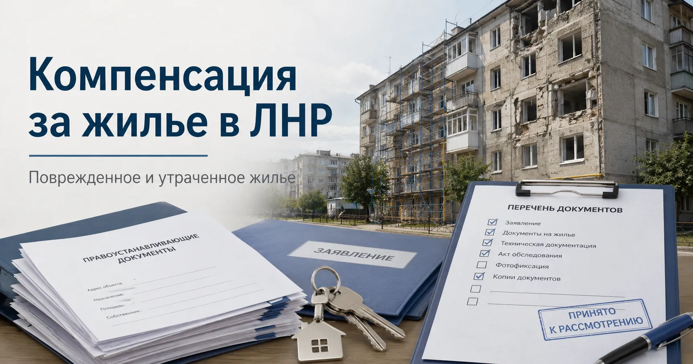

Компенсация за поврежденное или утраченное жилье в ЛНР: что нужно знать собственнику
Дата:

Коротко: компенсация за жилье в ЛНР - это не одна универсальная выплата. Нужно разделять четыре ситуации: поврежденное жилье, полностью утраченное жилье, утраченное имущество первой необходимости и жилье, которое прошло процедуру как имеющее признаки бесхозяйного имущества.
Главный вывод: начинать нужно не с вопроса "сколько заплатят", а с проверки права на объект. Если дом или квартира не зарегистрированы в ЕГРН, документы старые, утеряны, есть наследство, доли или расхождения по адресу, процедура может остановиться еще до расчета выплаты.
Что можно компенсировать
- Поврежденное жилье - дом, квартира или комната пострадали, но могут быть восстановлены.
- Утраченное жилье - объект разрушен или признан непригодным для проживания.
- Имущество первой необходимости - отдельная выплата за базовое утраченное имущество.
- Бесхозяйное жилье - отдельный механизм, если жилье прошло процедуру как имеющее признаки бесхозяйного имущества.
Главные цифры
- 51,5 тыс. рублей за 1 кв. м - размер компенсации за утраченное жилье в ЛНР, о котором сообщалось в 2025 году.
- 100 тыс. рублей - выплата при полной утрате имущества первой необходимости.
- 50 тыс. рублей - выплата при частичной утрате имущества первой необходимости, если утрачено не менее трех предметов.
- Более 20 тыс. жителей ЛНР, по данным ЛИЦ, получили компенсации за жилье и имущество с 2023 года.
- Более 4,6 тыс. жителей ЛНР, по данным ЛИЦ, получили такие выплаты в первом полугодии 2025 года.
Суммы нужно проверять на дату обращения. В этой теме менялись порядки, нормативы и разъяснения, поэтому старые цифры из чатов не должны использоваться как окончательный расчет.
Кто может претендовать на выплату
Компенсация привязана не просто к факту проживания, а к юридически подтвержденному отношению к объекту. Важны право собственности, доля, сведения ЕГРН, старые правоустанавливающие документы, наследство, решение суда или другое подтверждение права.
Если жилье в долевой собственности, вопрос затрагивает всех правообладателей. Если собственник умер, сначала нужно подтвердить наследственные права. Если человек жил в доме фактически, но право не оформил, главным риском становится доказательство самого права на объект.
По теме регистрации недвижимости и старых документов отдельно: Регистрация недвижимости в ЛНР в 2026 году.
Какие документы готовить
Точный перечень нужно уточнять в администрации, МФЦ, органе социальной защиты или другом уполномоченном органе по месту нахождения объекта. Базово могут понадобиться:
- паспорт;
- документы на жилое помещение;
- выписка из ЕГРН при наличии;
- старые правоустанавливающие документы;
- технический паспорт и документы БТИ;
- документы о наследстве или долях;
- доверенность представителя;
- реквизиты банковского счета;
- акт обследования или заключение комиссии;
- фото, видео и другие подтверждения повреждения.
Если в документах расходятся адрес, площадь, фамилия, кадастровый номер или состав собственников, это нужно выявить до подачи заявления.
Если собственник находится в ЛНР
Самый простой сценарий - личное обращение по месту нахождения объекта. Порядок действий: проверить документы и ЕГРН, уточнить орган приема, подать заявление, сохранить подтверждение подачи, дождаться обследования или решения комиссии.
Устный ответ не заменяет документ. Если заявление приняли - должно быть подтверждение подачи. Если отказали - нужен письменный отказ или официальный ответ с конкретным основанием.
Если собственник находится не в ЛНР
Если собственник находится в другом регионе России, на территории Украины или за границей, ключевой вопрос - представитель. На практике самый рабочий вариант - человек в ЛНР или России с правильно оформленной доверенностью.
В доверенности нужно прямо указать полномочия: подавать заявления, представлять интересы в администрации, МФЦ, органах соцзащиты, Росреестре, нотариальных органах и комиссиях, получать документы, ответы и решения.
Если доверенность оформляется за пределами России, заранее уточняются требования к переводу, апостилю, консульскому удостоверению или иной форме признания документа. Без этого документы могут не принять.
Главные риски для собственника вне ЛНР - проблемы с доверенностью, старые документы, отсутствие регистрации в ЕГРН, невозможность лично участвовать в процедуре и передача документов случайным посредникам.
Если жилье повреждено
Если восстановление возможно, главная задача - официально зафиксировать повреждения: акт обследования, заключение комиссии, документ администрации или иной акт по действующему порядку.
Капитальный ремонт лучше не начинать до фиксации ущерба, если можно дождаться обследования. Если ремонт уже начат, нужно сохранить фотографии до ремонта, чеки, договоры и акты выполненных работ.
Компенсация на ремонт не всегда равна реальной стоимости восстановления. Она рассчитывается по установленным правилам, а не по свободной рыночной оценке.
Если жилье полностью утрачено
Если объект разрушен или признан непригодным для проживания, нужно подтвердить не только сам факт повреждения, но и невозможность использовать помещение как жилое. Основной вес имеют акт обследования, заключение комиссии и документы на объект.
Для расчета важны площадь, статус помещения, доля собственника, право собственности и другие обстоятельства, предусмотренные порядком.
Если объект в долях, компенсация должна учитывать доли. Если объект наследственный, сначала подтверждаются права наследников. Если объекта нет в ЕГРН, вопрос может упереться в регистрацию права или восстановление документов.
Имущество первой необходимости
Имущество первой необходимости - отдельный вопрос. Его нельзя смешивать с компенсацией за дом или квартиру.
По опубликованным правилам различается полная и частичная утрата такого имущества: 100 тыс. рублей при полной утрате и 50 тыс. рублей при частичной утрате, если утрачено не менее трех предметов.
На практике нужно отдельно фиксировать состояние жилья и отдельно - утрату имущества первой необходимости.
Бесхозяйное жилье
Компенсация за жилье, поврежденное или утраченное из-за боевых действий, и компенсация при утрате права на жилье с признаками бесхозяйного имущества - разные процедуры.
По бесхозяйному жилью работает другой механизм: объект выявляется как имеющий признаки бесхозяйного имущества, проходит установленную процедуру и поступает в публичную собственность.
Риск возникает не только при разрушении дома. Если жилье не используется, не оформлено, не зарегистрировано в ЕГРН, есть долги или собственник не реагирует на уведомления, проблема может быть уже в правовом статусе объекта.
Подробнее: Бесхозное жилье в ЛНР и Бесхозное жилье и дедлайн 1 июля 2026.
Старые документы, наследство и доли
Многие документы в ЛНР оформлялись до перехода региона в российскую правовую систему. Они могут подтверждать историю права, но их нужно сопоставить с ЕГРН, актуальным адресом, площадью, техническими характеристиками и данными правообладателя.
Если документы утеряны, сначала восстанавливаются доказательства права: архивы, БТИ, нотариус, Росреестр, администрация, судебные решения, старые договоры, наследственные дела и техническая документация.
Если собственник умер, наследникам нужно открыть наследственное дело, подтвердить родство или основание наследования и оформить право на объект. Если срок принятия наследства пропущен, может потребоваться восстановление срока или установление факта принятия наследства.
Если жилье принадлежит нескольким собственникам, нужно определить доли и полномочия. Один человек может действовать за нескольких правообладателей только при наличии доверенностей.
Что делать при отказе
Отказ не всегда означает, что вопрос закрыт. Сначала нужно получить письменный ответ и понять основание.
Типовые причины отказа: не подтверждено право собственности, не хватает документов, нет акта обследования, объект не признан утраченным или поврежденным в нужной степени, заявление подано не тем лицом, есть спор по долям, наследству, адресу или площади.
Дальше нужно устранять конкретную причину: донести документы, исправить сведения, оформить доверенность, зарегистрировать право, подтвердить наследство, запросить повторное обследование или обжаловать решение.
Чего нельзя делать
- Передавать оригиналы документов случайным посредникам.
- Отправлять сканы паспорта, СНИЛС, документов на дом и банковских реквизитов людям из чатов.
- Платить за обещания "гарантированной компенсации".
- Подписывать доверенность с размытыми полномочиями.
- Путать прием заявления, обследование, включение в список и назначение компенсации.
- Начинать капитальный ремонт до фиксации ущерба, если можно дождаться обследования.
Практический порядок действий
- Определить тип ситуации: поврежденное жилье, утраченное жилье, имущество первой необходимости или бесхозяйное жилье.
- Проверить право на объект: собственник, доли, наследство, ЕГРН, старые документы.
- Собрать доказательства повреждения или утраты.
- Уточнить порядок подачи заявления по месту нахождения объекта.
- Подать заявление лично или через представителя.
- Сохранить подтверждение подачи.
- Получить акт обследования, решение комиссии или письменный ответ.
- При отказе смотреть конкретное основание и исправлять именно его.
Связь с ЕГРН, землей и бесхозяйным жильем
Компенсация за поврежденное или утраченное жилье не существует отдельно от общего имущественного порядка. Если объект не зарегистрирован, право не подтверждено, адрес расходится, земля под домом не оформлена, наследство не принято, а собственник находится за пределами региона, риски возрастают.
Владельцам домов в ЛНР важно смотреть на вопрос шире: дом, земля, ЕГРН, наследство, фактическое состояние объекта, документы и связь с администрацией.
По теме оформления земли под домом: Бесплатное оформление земли в ЛНР до 2028 года.
Короткая памятка
- Проверьте, есть ли право на объект в ЕГРН.
- Соберите старые документы, техпаспорт, документы БТИ, договоры, свидетельства, решения суда и наследственные бумаги.
- Зафиксируйте повреждение или утрату через официальный акт, комиссию или администрацию.
- Не начинайте капитальный ремонт до фиксации ущерба, если можно дождаться обследования.
- Если вы не в ЛНР, оформите представителя с точной доверенностью.
- Если документы старого образца, проверьте адрес, площадь, собственника и объект.
- Если пришел отказ, получите его письменно и исправляйте конкретную причину.
Статус информации
Подтверждено: в новых регионах действует федеральная программа восстановления и социально-экономического развития; в ЛНР установлен порядок мер социальной поддержки гражданам, чье жилье утрачено или повреждено в результате боевых действий; отдельно предусмотрены выплаты за имущество первой необходимости; в 2025 году сообщалось об увеличении компенсации за утраченное жилье в ЛНР до 51,5 тыс. рублей за квадратный метр; в 2026 году опубликованы отдельные акты о признаках бесхозяйного имущества и компенсации гражданам РФ, утратившим право собственности на такие помещения.
Вероятно: для большинства собственников главный риск будет не в отсутствии механизма компенсации, а в документах: ЕГРН, старые бумаги, наследство, долевая собственность, расхождения по адресу, отсутствие доверенности или невозможность лично участвовать в процедуре.
Требует уточнения: актуальный размер выплат на дату обращения, порядок подачи заявления в конкретном муниципалитете, перечень документов, возможность подачи через представителя, форма доверенности, порядок обследования объекта и сроки рассмотрения.
Источники
При подготовке материала использованы официальные нормативные акты Российской Федерации и Луганской Народной Республики, сообщения Луганского информационного центра, а также ранее опубликованные материалы KRM РФ по недвижимости, ЕГРН, земле и бесхозяйному жилью в ЛНР.
- Постановление Правительства РФ от 22.12.2023 N 2255: государственная программа восстановления ДНР, ЛНР, Запорожской и Херсонской областей
- Постановление Правительства ЛНР от 17.05.2024 N 113/24 о мерах поддержки гражданам, чье жилье утрачено или повреждено в результате боевых действий
- Постановление Правительства ЛНР от 23.12.2024 N 303/24 о реализации мер социальной поддержки в 2025 году и плановом периоде
- ЛИЦ: более 4,6 тыс. жителей ЛНР получили компенсации за жилье и имущество в первом полугодии 2025 года
- ЛИЦ: более 20 тыс. жителей ЛНР с 2023 года получили компенсации за жилье и имущество
- ЛИЦ: компенсация за утраченное жилье в ЛНР выросла до 51,5 тыс. рублей за квадратный метр
- Официальное опубликование правовых актов ЛНР: законы о бесхозяйном жилье и компенсации
- Постановление Правительства РФ от 19.12.2025 N 2079 о компенсации гражданам РФ, утратившим право собственности на жилье с признаками бесхозяйного имущества
- ЛИЦ: Закон ЛНР о признаках бесхозяйного имущества в отношении жилых помещений
- Регистрация недвижимости в ЛНР в 2026 году
- Бесплатное оформление земли в ЛНР до 2028 года
- Бесхозное жилье в ЛНР
- Бесхозное жилье и дедлайн 1 июля 2026
Главное для собственника
Компенсация за поврежденное или утраченное жилье - это не автоматическая выплата "по факту беды". Это процедура, где нужно подтвердить право, объект, площадь, обстоятельства повреждения или утраты и полномочия заявителя.
Если у вас есть жилье в ЛНР, начните с проверки документов, ЕГРН, адреса, площади, долей и наследства. Если вы не находитесь в ЛНР, заранее оформите надежного представителя. Чем раньше вы соберете документы и зафиксируете состояние объекта, тем ниже риск отказов, приостановок и потери времени.